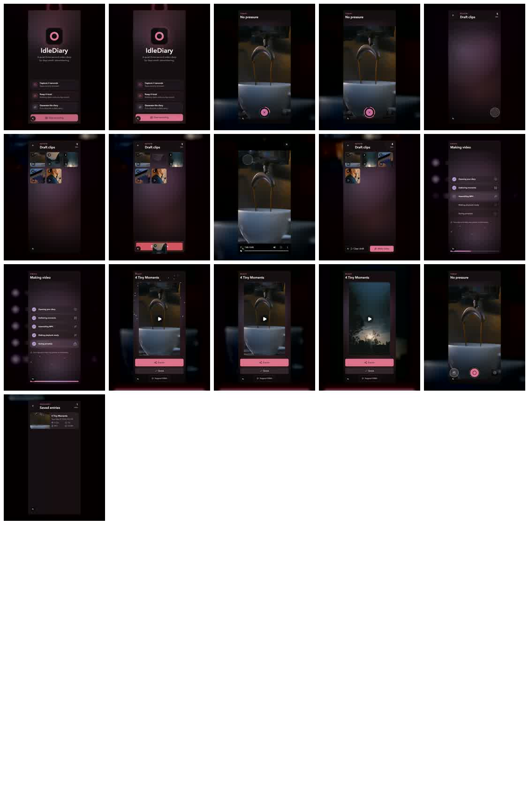

Say what should change
Use normal language: “slow down the delete,” “show the success state longer,” or “make it 4x5.”
Natural language in. Demo video out.
Tell the agent what the walkthrough should show. It edits the scenario, records the app, validates the video, and keeps the recipe for the next natural-language tweak.
Make the launch demo. Show recording, delete one clip, make the delete slower, and end on the videos list.

Generated output
1080x1350 · 30fps · frame sheet + report
How it works
Use normal language: “slow down the delete,” “show the success state longer,” or “make it 4x5.”
The agent updates a typed `.demo.ts` file instead of manually piloting the browser every run.
A fresh browser context runs stable selectors, assertions, app hooks, and visible tap or drag gestures.
The final MP4, frame sheet, and JSON report are generated and validated before the run is done.
Setup
The first integration adds scripts and a reusable scenario. Future requests usually become small timing, route, selector, or format edits.
npm install --save-dev ../agentic-demo-director/packages/cli
npx demo-director init
npm run demo:doctor
npm run demo:record
npm run demo:inspectScenario
import { defineDemo } from "@faka/demo-director";
export default defineDemo({
name: "main",
startUrl: "/demo/launch?scene=intro",
output: "dist/demo/main.mp4",
format: {
width: 1080,
height: 1350,
fps: 30,
duration: { min: 28, max: 40 },
crop: "social-4x5",
cursor: "hidden",
},
steps: async ({ page, gesture, expect }) => {
await gesture.tap(page.getByRole("button", { name: "Start recording" }));
await gesture.drag({
from: page.locator("[data-clip-id] button").nth(1),
to: page.getByTestId("review-action-bar"),
durationMs: 950,
});
await expect(page.getByRole("heading", { name: "4 Tiny Moments" })).toBeVisible();
},
});Validation
main.mp4Final H.264 demo video.
main.frames.jpgContact sheet for visual review.
main.report.jsonDuration, fps, dimensions, codec, audio, and timings.
takes/Raw browser captures for debugging broken runs.